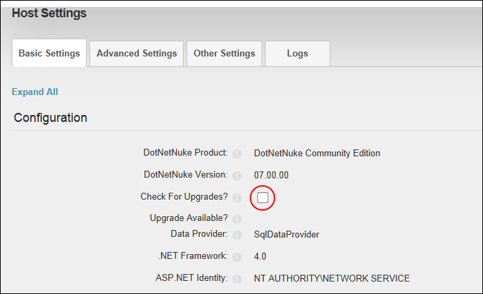
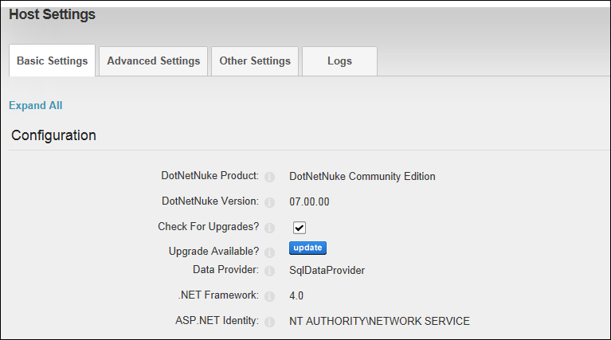

Checking for DNN Framework Upgrades
How to set your site to check for upgrades to the DNN core framework. Enabling this field will display the Updates Available button on this page as well as on the Control Panel (for SuperUsers only) whenever an upgrade is available.
- Navigate to Host >
 Host Settings.
Host Settings.
- Select the Basic Settings tab.
- Expand the Configuration section.
- At Check For Upgrades?, select from these options:
- Mark
 the check box to enable DNN to check for downloads.
the check box to enable DNN to check for downloads. - Unmark
 the check box to disable.
the check box to disable.

-
Click the Update button. The Update button will now be displayed allowing you to go directly to the dnnsoftware.com website, login and download the Upgrade Package.
